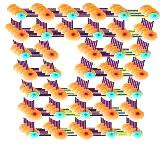
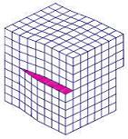
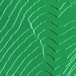

Crystalline
Defects in Silicon
Like
anything else in this world, crystals inherently possess imperfections,
or what we often refer to as
'crystalline defects'.
The presence of most of these crystalline defects is undesirable in
silicon wafers, although certain types of 'defects' are essential in
semiconductor manufacturing. Engineers in the semiconductor industry
must be aware of, if not knowledgeable on, the various types of silicon
crystal defects, since these defects can affect various aspects of
semiconductor manufacturing - from production yields to product
reliability.
Crystalline defects may be
classified into four categories according to their geometry.
These categories are: 1) zero-dimensional or
'point' defects;
2) one-dimensional or
'line' defects;
3) two-dimensional or
'area' defects;
and 4) three-dimensional or
'volume' defects.
Table 1 presents the commonly-encountered defects under each of these
categories.
Table 1.
Examples of Crystalline Defects
|
Defect Type |
Examples |
|
Point or
Zero-Dimensional Defects |
Vacancy Defects
Interstitial Defects
Frenkel Defects
Extrinsic Defects |
|
Line or
One-Dimensional Defects |
Straight Dislocations
(edge or screw)
Dislocation Loops |
|
Area or
Two-Dimensional Defects |
Stacking Faults
Twins
Grain Boundaries |
|
Volume or
Three-Dimensional Defects |
Precipitates
Voids |
There are
many forms of crystal
point defects. A defect wherein a silicon atom is missing from one of
these sites is known as a
'vacancy'
defect. If an atom is
located in a non-lattice site within the crystal, then it is said to be
an 'interstitial'
defect. If the
interstitial defect involves a silicon atom at an interstitial site
within a silicon crystal, then it is referred to as a
'self-interstitial'
defect. Vacancies and
self-interstitial defects are classified as
intrinsic point defects.
If an atom leaves its site
in the lattice (thereby creating a vacancy) and then moves to the
surface of the crystal, then it becomes a
'Schottky'
defect. On the other hand, an atom that vacates its position in
the lattice and transfers to an interstitial position in the crystal is
known as a
'Frenkel'
defect. The formation of a Frenkel defect therefore produces two defects
within the lattice - a vacancy and the interstitial defect, while the
formation of a Schottky defect leaves only one defect within the
lattice, i.e., a vacancy. Aside from the formation of Schottky and
Frenkel defects, there's a third mechanism by which an intrinsic point
defect may be formed, i.e., the movement of a surface atom into an
interstitial site.
Extrinsic
point defects,
which are point defects involving foreign atoms, are even more critical
than intrinsic point defects. When a non-silicon atom moves into a
lattice site normally occupied by a silicon atom, then it becomes a
'substitutional
impurity.'
If a non-silicon atom occupies a non-lattice site, then it is referred
to as an
'interstitial
impurity.'
Foreign atoms
involved in the formation of extrinsic defects usually come from dopants,
oxygen, carbon, and metals.
The presence
of point defects is important in the kinetics of diffusion and
oxidation. The rate at which diffusion of dopants occurs is
dependent on the concentration of vacancies. This is also true for
oxidation of silicon.
Crystal line
defects
are also known as
'dislocations',
which can be classified as one of the following: 1) edge dislocation; 2)
screw dislocation; or 3) mixed dislocation, which contains both edge and
screw dislocation components.
An
edge
dislocation
may be
described as an extra plane of atoms squeezed into a part of the crystal
lattice, resulting in that part of the lattice containing extra atoms
and the rest of the lattice containing the correct number of atoms.
The part with extra atoms would therefore be under compressive stresses,
while the part with the correct number of atoms would be under tensile
stresses.
The
dislocation
line
of an edge dislocation is the line connecting all the atoms at the
end
of the extra plane.

Figure 1.
An edge dislocation; note the insertion
of atoms in the upper part of the lattice
If the
dislocation is such that a step or ramp is formed by the displacement of atoms
in a plane in the crystal, then it is referred to as a
'screw
dislocation.'
The
screw basically forms the boundary between the slipped and unslipped
atoms in the crystal. Thus, if one were to trace the periphery of a
crystal with a screw dislocation, the end point would be displaced from
the starting point by one lattice space.
The
dislocation line
of a screw dislocation is the
axis
of the screw.

Figure 2.
A screw dislocation; note the screw-like
'slip' of atoms in the upper part of the lattice
If the
dislocation consists of an extra plane of atoms (or a missing plane of
atoms) lying entirely within the crystal, then the dislocation is known
as a
'dislocation loop.'
The
dislocation line of a dislocation loop forms a closed curve that is
usually circular in shape, since this shape results in the lowest
dislocation energy.
Dislocations
are generally undesirable in silicon wafers because they serve as sinks
for metallic impurities as well as disrupt diffusion profiles.
However, the ability of dislocations to sink impurities may be
engineered into a wafer fabrication advantage. i.e., it may be used in
the removal of impurities from the wafer, a technique known as
'gettering.'
Area defects
in crystals consist of stacking faults, grain boundaries, and twin
boundaries. A
'stacking
fault'
pertains to a
disturbance in the regularity of the stacking of planes of atoms in a
crystal lattice. This usually occurs when a plane is inserted into
or removed from the lattice. The insertion of an extra plane in the
stacking is known as an 'extrinsic' stacking fault, while the removal of
a plane is referred to as an 'intrinsic' stacking fault.
Stacking
faults can become electrically active when decorated by impurity atoms.
Electrically active stacking faults can cause device degradation,
examples of which are higher reverse bias currents in p-n junctions and
storage time reduction in MOS circuits.

Figure 1.
Photo of a Stacking Fault
Image Source:
http://lmass.uah.edu
- J. A.
Gavira-Gallardo, J. D. Ng and M.A. George
A
'twin'
is an area defect wherein a mirror image of the regular lattice is
formed during the growth of the silicon ingot, usually caused by a
perturbation. The
'twin boundary'
is the mirror plane of the twin formation.
A
'grain
boundary'
refers to the
transition or interface between crystals whose atomic arrangements are
different in orientation with respect to each other.
Volume defects
in a crystal
are also known as
'bulk'
defects,
which include
voids
and
precipitates
of extrinsic and intrinsic point defects.
Every
impurity introduced
into a crystal has a certain level of
solubility, which defines the
concentration of that impurity that the solid solution of the host
crystal can accommodate. Impurity solubility usually decreases
with decreasing temperature.
If an impurity is introduced into a crystal at the maximum
concentration allowed by its solubility at a high temperature, the
crystal will become
supersaturated with that impurity
once it is cooled
down. A crystal under such supersaturated conditions seeks and
achieves equilibrium by
precipitating
the excess impurity atoms into another phase of different composition or
structure.
Precipitates
are considered undesirable because they have been known to act as sites
for the generation of dislocations. Dislocations arise as a means
of relieving stress generated by the strain exerted by precipitates on
the lattice. Precipitates induced during silicon wafer processing
come from oxygen, metallic impurities, and dopants like boron.
See Also:
Crystal Defect Effects;
Incoming
Wafers;
Epitaxy;
Polysilicon;
Ion
Implant; Gettering;
Crystal
Growing
HOME
Copyright
© 2004-Present
www.EESemi.com.
All Rights Reserved.